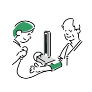

石井クリニックはこれからも
山形の皆様のかかりつけ医です
山形で治療し続けて30年
笑顔をお守りします
ここ山形の地で当院を開院し30年が経ちました。
皆様の笑顔を守るお手伝いをさせていただきました。
いつも皆様のそばにある”山形県民のかかりつけ医”として
これからも誠心誠意対応させていただきます。
治療内容
以下の検査項目以外でも、まずはご相談頂けますと幸いです。
-
一般的な内科疾患
風邪、扁桃腺炎、発熱、胸痛、むくみ、 動悸、疲れ・疲労、だるい、体重減少、 立ちくらみ、嘔気、嘔吐、吐き気、胸焼け、 食欲不振・減退、肩こり、花粉症、蕁麻疹、 アレルギー性鼻炎など
-
循環器内科系疾患
狭心症、心筋梗塞、心不全、心臓弁膜症、 不整脈、大動脈瘤、心筋症、心臓発作、 動脈硬化症、急性冠動脈症候群など
-
消化器内科系疾患
腹痛、急性・慢性胃炎、胃痛、胃・ 十二指腸潰瘍、下痢、便秘、逆流性食道炎、 過敏性腸症候群、食中毒、胃痙攣、胃下垂、 胃もたれ、心窩部（みぞおち）の痛み、 胆石症、急性・慢性肝炎、自己免疫性肝炎、 脂肪肝、B型肝炎、C型肝炎、肝硬変など

お知らせ
- 2020.12.22 休診情報
- 2021年1月の休診日は5日、17日、27日となります。
- 2020.12.11 イベント
- 当院でクリスマスイベントを行います。南高校吹奏楽団をお呼びして、ロビーコンサートを開催予定です。
- 2020.12.01 採用
- 当院では臨床検査技師を募集しております。詳しい福利厚生についてご説明させていただきます。当院で働く…
- 2020.11.12 イベント
- ホームページをリニューアルしました。